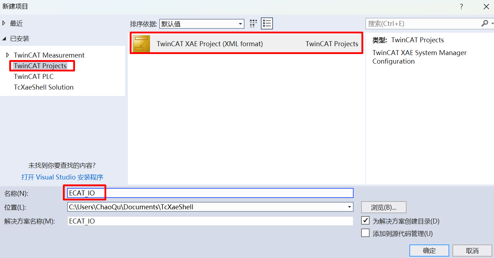
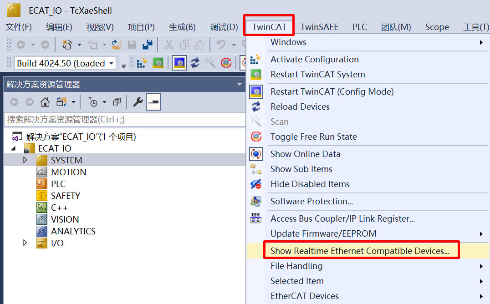
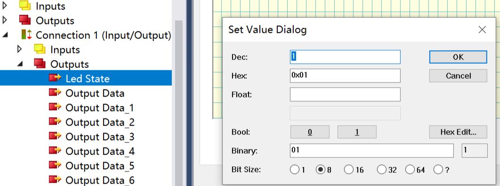

27.1. OpENer Blinky
27.1.1. Overview
The OpENer Blinky example is used to demonstrate the function of realizing remote IO through the Ethernet/IP (EIP) protocol using OpENer.
27.1.2. Preparation
27.1.2.1. Hardware
A development board with Ethernet. Refer to the {ref}pin description <board_resource> of the specific development board to view the Ethernet hardware.
==According to your development board, select RMII/RGMII and ethernet phy in the CMakeLists.txt==
A PC with a network port.
The TwinCAT3 software has adaptation issues with PC network cards. Some supported Intel network cards.
27.1.2.2. Software
TwinCAT3.1(Build 4024.56)
27.1.3. TwinCAT project settings
27.1.3.1. Create a project
Open the TwinCAT software and select File -> New -> Project.

Select TwinCAT Project, name it and click OK.

27.1.3.2. Software configuration
Update the network card driver (required when using for the first time).

Clock setting
- When the software is running, the following error may be encountered: It is necessary to run C:TwinCAT3.1Systemwin8settick.bat with administrator privileges.
Init4RTime：Start Interrupt：Ticker started >> AdsWarning4115 （0x1013,RTIME：system clock setup failed） - - -

27.1.3.3. Add EIP Scanner
Click on Device, right-click to add a new item.

Select EIP Scanner.

Select the network card after the driver is updated.

Configure the IP address.

Re-enter the configuration mode to make the IP configuration in the previous step take effect.

27.1.3.4. Add EDS file
Right-click on EIP Scanner and select import EDS file. Select opener/opener_blinky_app.eds.

27.1.3.5. Scan devices
Right-click on EIP Scanner and then scan.

Add a device.

27.1.3.6. Add IO connection

If there is no Exclusive Owner is the combox, specify the eds file manually.

27.1.3.7. IO operation
For input IO, press the button KEYA on the evaluation board, and the value of Input/Key State changes.

For output IO, right-click on Led State, select Online, and click Write to write a value. When writing 1, the LED on the development board lights up. When writing 0, the LED on the development board turns off.

27.1.4. Operation phenomenon
After the project runs correctly, the serial terminal will output the following information. The input and output IO states correspond to the TwinCAT project configuration:
This is Ethernet/IP blinky demo.
LwIP Version: 2.1.2
Enet phy init passed !
Link Status: Down
Link Status: Down
Link Status: Up
Link Speed: 100Mbps
Link Duplex: Full duplex
IPv4 Address: 192.168.100.10
IPv4 Netmask: 255.255.255.0
IPv4 Gateway: 192.168.100.1
Mesaage receieved from host!